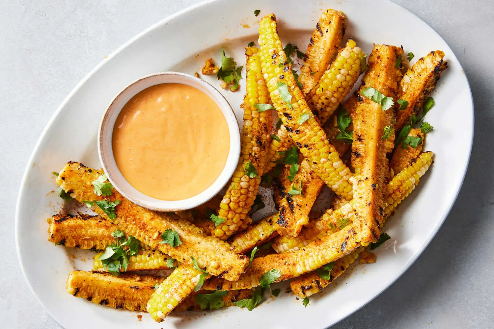

Corn Ribs

Source: NYT Cooking
Description
For a more novel approach to corn on the cob, these corn ribs are a fun,
flavorful way to eat the juicy summer staple. Shucked ears of corn are quartered,
coated in a barbecue-inspired spice blend, charred on a grill and tossed in butter.
As they cook, the corn ribs curl, resembling pork ribs, thus earning their name.
(They’re also eaten similarly, as the cob functions similarly to the pork bone.)
A fair warning: Preparing corn ribs takes patience and a very sharp knife.
The cobs should be patted dry before slicing, as slippery kernels will create even
more instability for the tall, teetering cobs. Reach for a large chef’s knife, if you’ve got one,
and make sure it’s newly sharpened for easier (and safer) slicing. Use a rocking motion to slowly
slice through the center of the cobs — and don’t rush it. Serve the corn ribs as is, or with a creamy,
spicy or herby dip.
Ingredients
- 4 ears corn, shucked
- 2 teaspoons kosher salt
- 2 teaspoons smoked or sweet paprika
- 1 teaspoon garlic powder
- 1/2 teaspoon onion powder
- 1/4 teaspoon black pepper
- 1/4 teaspoon cayenne pepper (optional)
- 2 tablespoons vegetable oil
- 4 tablespoons salted butter, cubed, or garlic butter
- Fresh parsley or cilantro (optional), chopped, for serving
- Sriracha mayonnaise, ranch dressing or green goddess dressing (optional), for dipping
Instructions
- Bring a large pot of water to a boil. Prepare an ice bath by filling a large bowl with ice and cold water.
Once water is boiling, add corn and boil for 5 minutes. Using tongs, remove cobs and transfer them to the
ice bath until just cool. (Boiling the corn helps soften the cores so the corn ribs are easier to slice.)
- Meanwhile, in a small bowl, combine salt, paprika, garlic powder, onion powder, black pepper and cayenne (if using).
Heat a grill or large grill pan to medium-high.
- Thoroughly dry the corn, then, using a very sharp, large knife, trim both ends of each ear of corn. On a flat, stable
surface, stand up one ear of corn vertically and carefully slice it in half lengthwise. (Do this slowly, using a rocking
motion. If you feel more comfortable, the ears can first be cut crosswise into two smaller cobs before this step.)
Place each half on the surface, flat side down, and slice each in half lengthwise. Each ear of corn will produce
4 ribs (or 8 if they’re halved crosswise first, for ease).
- Transfer corn ribs to a large bowl, drizzle with the oil and gently toss to coat.
Sprinkle with the spice mixture and toss again.
- Grill corn (covered, if using a gas grill), kernels side down, until charred in spots, 4 to 6 minutes.
- Immediately return grilled corn ribs to the large bowl and gently toss with the butter until melted.
Serve warm, sprinkled with fresh herbs and with a sauce for dipping, if desired.